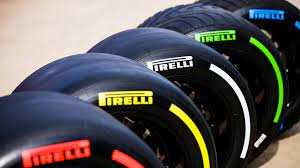
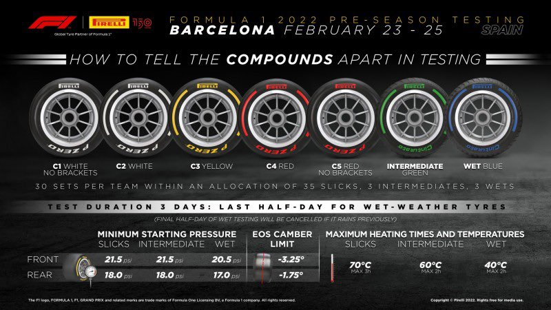

There are seven tyre compounds available for the 2022 season. Two of these are for wet weather driving, the intermediate (indicated by a green sidewall) for light standing water conditions, and the full wet (indicated by a blue sidewall) for heavy standing water. These are available to all the teams at every Grand Prix. The remaining five tyre compounds are for dry running and are denoted C1 to C5, with C1 being the hardest tyre, meaning it provides the least grip but is the most durable, and C5 being the softest, having the most grip but being the least durable. Pirelli nominates three of the compounds to be run at each race. Of these three, the hardest compound is named the hard tyre for the weekend and is denoted by a white sidewall, while the softest compound is named the soft and is denoted by a red sidewall, with the third of the nominated tyres named the medium tyre which is denoted by a yellow side wall.. Drivers have to use at least two of the dry weather compound tyres during a race, unless the race is affected by wet weather. Each driver may use no more than thirteen sets of dry-weather tyres, four sets of intermediate tyres, and three sets of wet-weather tyres during a race weekend.
TYRES

